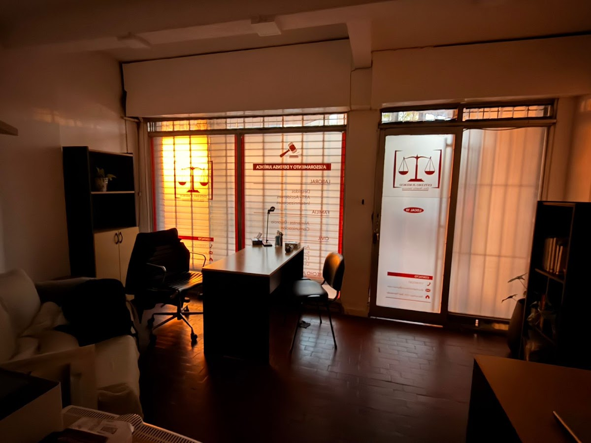
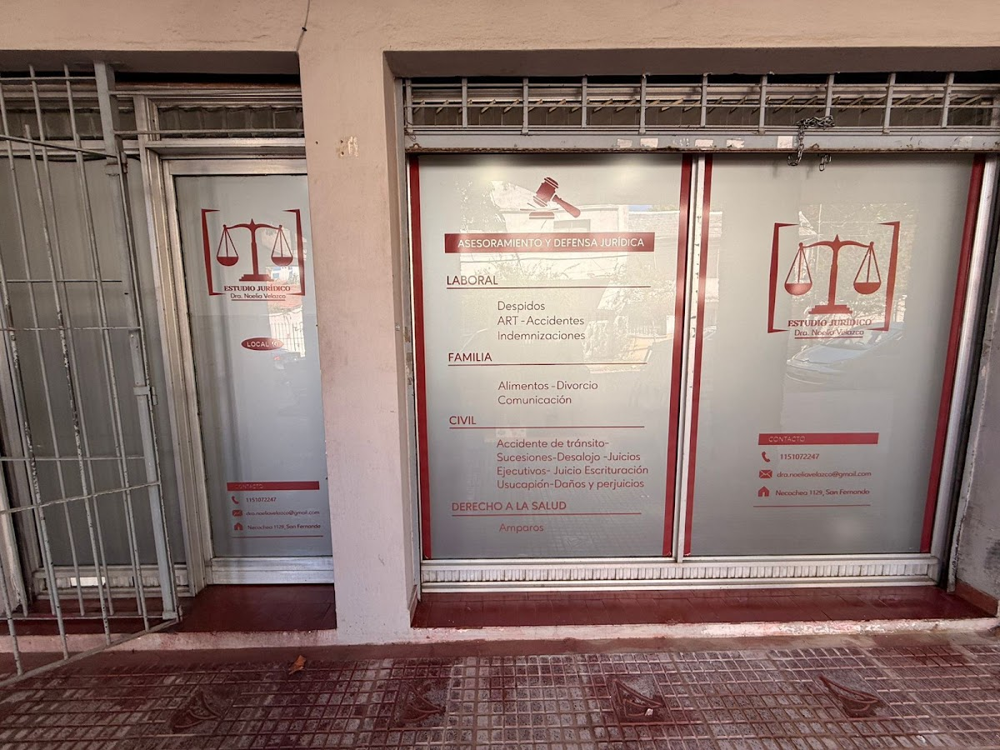

Laboral
- Despidos
- ART y accidentes
- Indemnizaciones
Estudio Jurídico Dra. Noelia Velazco y Asociados
Laboral, familia, civil y derecho a la salud. Atención en Necochea 1129, local 10.
Los botones de contacto se activan cuando arrancamos con la versión oficial.

Áreas de práctica

El estudio
El estudio está en Necochea 1129, San Fernando. Vas a reconocer la vidriera con la balanza y las áreas de práctica.
Horarios y dirección
| Lunes | 9:00 a 16:00 |
|---|---|
| Martes | 9:00 a 16:00 |
| Miércoles | 9:00 a 16:00 |
| Jueves | 9:00 a 16:00 |
| Viernes | 9:00 a 16:00 |
| Sábado y domingo | Cerrado |
Laboral, familia, civil y derecho a la salud.
Los botones de contacto se activan cuando arrancamos con la versión oficial.